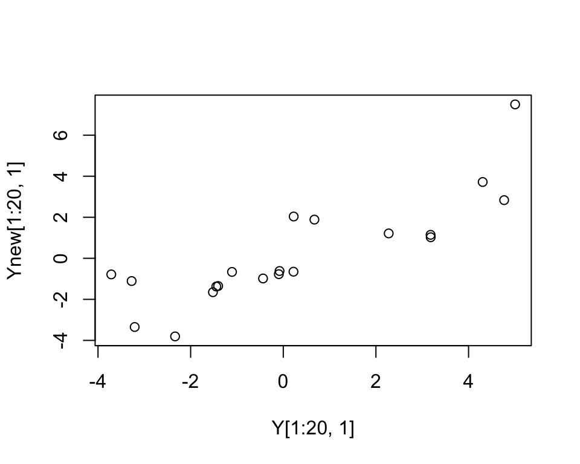

This is a brief introduction to the flashr package. The examples here will suffice for many users. For more advanced usage, see the other vignettes.
The flashr package fits the model \[Y = LF' + E\] where \(Y\) is an \(n \times p\) matrix, \(L\) is an \(n \times k\) matrix, and \(F\) is a \(p \times k\) matrix, and \(E\) is an \(n \times p\) matrix of residuals which (by default) are assumed to have column-specific variances:
\[E_{ij} \sim N(0,\sigma_{j}^2).\]
The columns of \(L\) are called the “loadings” and columns of \(F\) are called the “factors”. Unlike some other methods (e.g. singular value decomoposition) these columns are not required to be orthogonal.
The key idea behind flashr is to use Empirical Bayes methods to estimate a “prior” distribution for each factor and each loading. This can induce sparsity on either/or factors and loadings if the data support this.
The scaling of the factors and loadings in the above model is arbitrary. Often it is convenient to scale the loadings and columns to have unit norm. In this case we can write
\[Y = LDF' + E,\]
where \(D\) is a diagonal matrix of “weights” that capture the strength of each factor/loading. The flash function flash_get_ldf returns the values of \(L, D\) and \(F\) in this model (with \(D\) returned as a vector of the diagonal values).
First we will simulate some data for illustration (in this case the loadings and factors are not at all sparse, so the benefits of flash over other methods might be limited.)
library(flashr)
set.seed(1)
n = 100
p = 500
k = 7
LL = matrix(rnorm(n*k),nrow=n)
FF = matrix(rnorm(p*k),nrow=p)
Y = LL %*% t(FF) + rnorm(n*p)When running flash, usually you will run one command to fit the model, and a second to extract results you want from the fit. The flash function is the one most users will want to start with to fit the model. The flash_get_ldf function can then be used to get the values of \(L,D\) and \(F\).
By default flash runs the greedy algorithm from Wang and Stephens. This is usually the quickest approach. It simply adds factors one at a time, until adding a new factor doesn’t improve the fit:
f = flash(Y)
# fitting factor/loading 1
# fitting factor/loading 2
# fitting factor/loading 3
# fitting factor/loading 4
# fitting factor/loading 5
# fitting factor/loading 6
# fitting factor/loading 7
# fitting factor/loading 8
ldf = flash_get_ldf(f)
ldf$d
# [1] 292.3761 253.6873 233.4289 210.8591 204.2400 203.0717 182.1317Note that flash correctly stopped at 7 factors for these data. (Although it tries to fit an 8th factor, from the results we can see that this does not appear: this is because it turned out to be 0.)
Sometimes the backfitting algorithm can improve the fit (but it takes longer). To do backfitting on a previous flash fit you can provide that fit as the f_init parameter, and set backfit=TRUE. Here we use the fit obtained from the greedy function as our initialization.
f.b = flash(Y, f_init = f, backfit=TRUE, greedy=FALSE)
ldf.b = flash_get_ldf(f.b)
ldf.b$d
# [1] 303.7844 263.2466 241.8200 217.4748 209.0290 206.0587 183.2006If you know you are going to want to do backfitting anyway, you can do greedy+backfitting it in one command without saving the intermediate result:
f.gb = flash(Y, backfit=TRUE, greedy=TRUE)
# fitting factor/loading 1
# fitting factor/loading 2
# fitting factor/loading 3
# fitting factor/loading 4
# fitting factor/loading 5
# fitting factor/loading 6
# fitting factor/loading 7
# fitting factor/loading 8
ldf.gb = flash_get_ldf(f.gb)
ldf.gb$d
# [1] 303.7844 263.2466 241.8200 217.4748 209.0290 206.0587 183.2006Suppose your matrix has some missing entries and you want to fill them in. You can do this by first running flash on your matrix and then using flash_fill. (This function fills in the missing entries using the relevant elements of the estimated LDF’ matrix).
To illustrate, we add a little missing data to \(Y\) here before running.
Ymiss=Y
Ymiss[1:20,1] = NA
f = flash(Ymiss)
# fitting factor/loading 1
# fitting factor/loading 2
# fitting factor/loading 3
# fitting factor/loading 4
# fitting factor/loading 5
# fitting factor/loading 6
# fitting factor/loading 7
# fitting factor/loading 8
Ynew = flash_fill(Ymiss,f)
plot(Y[1:20,1],Ynew[1:20,1])